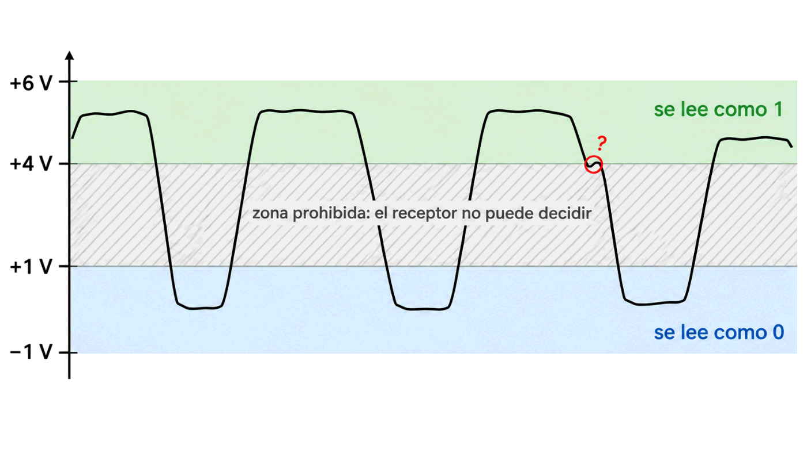
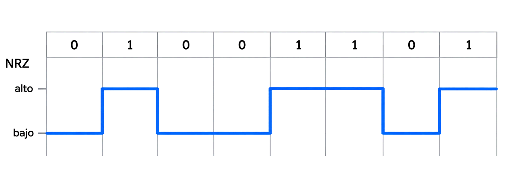

Y sin embargo funciona. Hoy vas a ver por qué: todo depende de cómo se ponen los bits en el cable.
Contenido del día
1. Banda base: la señal tal cual
Hay dos formas de enviar bits por un medio: ponerlos en él directamente, como niveles de tensión o pulsos de luz, o subirlos a una onda portadora. Lo primero se llama transmisión en banda base, y es el tema de hoy. Lo segundo es la modulación, y es el de mañana.
Según el libro de la asignatura: para distancias cortas y medios de calidad se transmite en digital, en banda base. Si la distancia es larga o el medio es peor, conviene adaptar la señal mediante modulación.
Una red local por cable es el caso típico de banda base.
El currículo de Cisco separa dos pasos dentro de la capa física, y conviene tenerlos claros:
| Paso | Qué hace | Ejemplo |
|---|---|---|
| Codificación | Convierte el flujo de bits en un código: decide qué patrón representa cada bit | «un 1 es una subida en mitad del bit» |
| Señalización | Genera la señal física que lleva ese código: eléctrica, óptica o de radio | una tensión que pasa de −2,5 V a +2,5 V |
2. Niveles y rangos
El convenio más simple: +5 V para el 1 y 0 V para el 0. Pero ayer viste que la señal real llega deformada, así que el receptor no puede esperar valores exactos. Trabaja con rangos:

+6 V ┐
│ zona del 1 cualquier valor entre 4 y 6 V se lee como 1
+4 V ┘
·
· zona prohibida aquí el receptor no puede decidir
·
+1 V ┐
│ zona del 0 cualquier valor entre −1 y +1 V se lee como 0
−1 V ┘Entre ambas zonas queda un hueco en el que la señal no debería caer nunca. Si cae, el receptor duda: son las interrogaciones que viste ayer en el laboratorio.
3. NRZ: el código más sencillo
NRZ significa Non Return to Zero, «sin retorno a cero». La regla es la más directa posible:
El 0 es un nivel de tensión y el 1 es otro. La señal se mantiene en ese nivel durante todo el bit, sin volver a cero entre uno y otro.

0 1 0 0 1 1 0 1
┌─────┐ ┌───────────┐ ┌─────
NRZ │ │ │ │ │
──────┘ └───────────┘ └─────┘Ventajas: es sencillo y hace como mucho un cambio por bit, así que ocupa poco ancho de banda. Pero tiene un problema grave, y se ve mejor con un ejemplo.
4. El problema del sincronismo
Imagina que llegan cien ceros seguidos en NRZ. La señal es una línea plana durante todo ese tiempo. ¿Cómo sabe el receptor si han sido cien, noventa y nueve o ciento uno?
Solo puede contar tiempo con su propio reloj. Y dos relojes nunca van exactamente a la misma velocidad: tras una larga ristra sin cambios, el receptor se desfasa. El libro lo llama pérdida de sincronismo: el receptor no sabe exactamente cuántos ceros o unos está recibiendo.
Hay dos formas de que emisor y receptor se pongan de acuerdo en el ritmo:
- Asíncrona: no hay señal de reloj. Cada bloque lleva indicadores de comienzo y de fin para que el receptor se reajuste.
- Síncrona: las señales se envían junto con una señal de reloj.
Enviar el reloj por separado cuesta otro hilo. La solución elegante es meter el reloj dentro de la propia señal.
5. Manchester: una transición en cada bit
La codificación Manchester no representa el bit con un nivel, sino con un cambio en mitad del bit:
0: transición de alto a bajo en mitad del bit.
1: transición de bajo a alto en mitad del bit.
El libro de la asignatura llama a esta misma idea codificación bifase.
0 1 0 0 1 1 0 1
───┐ ┌─────┐ ┌──┐ ┌──┐ ┌─────┐ ┌──
Manch. │ │ │ │ │ │ │ │ │ │
└─────┘ └──┘ └─────┘ └──┘ └─────┘
↓ ↑ ↓ ↓ ↑ ↑ ↓ ↑
la flecha es la transición central: ↑ = 1, ↓ = 0Como siempre hay una transición en mitad de cada bit, el receptor puede sincronizar su reloj con ella, pasen los bits que pasen. Cien ceros seguidos son cien bajadas, perfectamente contables.
Pruébalo con el codificador. Elige Dieciséis ceros seguidos y compara las dos filas:
💡 Ampliación: la otra bifase del libro y dónde se usó Manchester
El libro describe dos variantes. La que has visto, que llama Bifase L, y la Bifase M, en la que el 0 se representa con una transición en mitad del intervalo y el 1 sin transición.
Manchester fue la codificación de la Ethernet original a 10 Mbps, incluida la de par trenzado (10BASE-T). Las versiones más rápidas la abandonaron precisamente por su coste en ancho de banda. Este dato procede de la norma IEEE 802.3, no de la bibliografía de la asignatura.
6. Baudios frente a bits por segundo
Aquí está la llave de la contradicción. Hay dos velocidades distintas, y el libro las define así:
| Medida | Qué cuenta | Unidad |
|---|---|---|
| Bits por segundo | Cuántos bits se transmiten en un segundo | bps |
| Baudios | Cuántas veces por segundo cambia de valor la señal | baudios |
Cada valor que toma la señal durante un intervalo se llama símbolo. Si solo hay dos niveles, cada símbolo lleva un bit y las dos velocidades coinciden. Pero no tiene por qué ser así.
Más niveles, más bits por símbolo
Con 4 niveles, cada símbolo puede representar dos bits (00, 01, 10 u 11). Con 8 niveles, tres. La regla general:
bps = baudios × bits por símbolo
El ejemplo del libro: con 8 tensiones distintas, del 0 al 7, cada valor lleva 3 bits, y la velocidad en bps es tres veces la velocidad en baudios.
| Niveles | Bits por símbolo | A 1 000 baudios |
|---|---|---|
| 2 | 1 | 1 000 bps |
| 4 | 2 | 2 000 bps |
| 8 | 3 | 3 000 bps |
| 16 | 4 | 4 000 bps |
Mira la última fila del codificador: con 4 niveles, 16 bits caben en 8 símbolos. La señal cambia la mitad de veces, así que sus armónicos están a la mitad de frecuencia.
Y al revés: menos bps que baudios
El libro también avisa de que la velocidad en bps puede ser menor que en baudios. Es justo lo que pasa en Manchester: cada bit puede llevar dos cambios de nivel, así que la señal cambia más veces por segundo que bits transmite.
7. Cómo lo hace Ethernet
El currículo de Cisco resume qué técnicas usa cada medio:
| Medio | Codificación | Señalización |
|---|---|---|
| Cobre | Manchester · NRZ · 4B/5B con MLT-3 · 8B/10B · PAM5 | Cambios en el campo electromagnético: intensidad y fase |
| Fibra óptica | Pulsos de luz | Un pulso es un 1; la ausencia de pulso, un 0 |
| Inalámbrico | DSSS · OFDM | Ondas de radio |
Resolviendo la contradicción: Gigabit Ethernet
La Ethernet de 1 Gbps por par trenzado usa PAM5, una señal de cinco niveles, y la combina con otra idea: usar los cuatro pares a la vez.
4 pares × 125 millones de baudios × 2 bits por símbolo = 1 000 Mbps
cada par lleva: 250 Mbps pero solo cambia 125 millones de veces por segundo
fundamental máx: 62,5 MHz por debajo de los ~100 MHz del cableMil millones de bits no significa mil millones de cambios. Repartiendo entre cuatro pares y llevando más de un bit por símbolo, cada par cambia solo 125 millones de veces por segundo, y la señal cabe en el cable.
Las cifras de 125 millones de baudios y 2 bits por símbolo proceden de la norma IEEE 802.3 para 1000BASE-T. La bibliografía de la asignatura nombra PAM5, pero no da estos valores.
💡 Ampliación: qué es 4B/5B
La tabla de Cisco menciona 4B/5B. La idea es otra forma de atacar el problema del sincronismo: cada grupo de 4 bits se sustituye por un código de 5 bits elegido de forma que nunca haya demasiados ceros seguidos.
Se pierde un 20 % de capacidad, pero se garantiza que la señal cambie a menudo. Fast Ethernet a 100 Mbps lo usa: los 100 Mbps se convierten en 125 millones de símbolos por segundo. Detalle procedente de la norma IEEE 802.3.
8. Resumen y errores frecuentes
- Banda base: la señal digital se pone directamente en el medio. Es lo normal en redes locales por cable.
- Codificación elige el patrón; señalización genera la señal física.
- NRZ: un nivel para cada bit. Sencillo, pero pierde el sincronismo con ristras largas.
- Manchester: una transición en mitad de cada bit. Lleva el reloj dentro, a costa del doble de ancho de banda.
- Baudios cuentan cambios de la señal; bps, bits. bps = baudios × log2(niveles).
- Más niveles, más bits por símbolo y más sensibilidad al ruido.
- Gigabit Ethernet: 4 pares y varios niveles por par.
| Se dice… | …pero en realidad |
|---|---|
| «Baudios y bits por segundo son lo mismo» | Solo con dos niveles. Con más, hay más bits que baudios |
| «Manchester es más rápido que NRZ» | Al revés: a igual velocidad necesita más ancho de banda. Lo que gana es sincronismo |
| «En Manchester el 1 es nivel alto» | El bit es la transición central, no el nivel |
| «Con más niveles siempre es mejor» | Más bits por símbolo, pero más errores con el mismo ruido |
| «1 Gbps son mil millones de cambios por segundo» | En 1000BASE-T son 125 millones por par, con 4 pares y 2 bits por símbolo |
| «Codificar y modular son lo mismo» | Codificar es poner los bits en banda base; modular, subirlos a una portadora |
9. Repaso con flashcards
Piensa la respuesta antes de girar la tarjeta.
Quiz del día
14 preguntas · 22 minutos · Contesta sin volver a la teoría
El cronómetro no corre mientras lees: arranca al llegar aquí, al pulsar «Empezar quiz» o al marcar tu primera respuesta.
Resultados
Respuestas correctas: 0 / 0
Respuestas incorrectas: 0
Con el codificador comprobarás cuánto sincronismo gana Manchester y cuánto le cuesta. Después consultarás qué velocidades admite tu propia tarjeta y harás la cuenta de Gigabit Ethernet con tus datos.
→ Ir al laboratorio del Día 2 (70 min)
Modulación: qué hacer cuando el medio es el aire o una línea pensada para voz. Se sube la información a una onda portadora y se le cambia la amplitud, la frecuencia o la fase.
Tarea de calentamiento (5 min): hoy has usado el nivel de la señal para llevar bits. ¿Qué otras propiedades de una onda, de las que viste ayer, podrían llevar información?